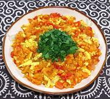

|
Gari FotoGhana - Gari Foto | ||||
| Makes: Effort: Sched: DoAhead: |
6 break *** 1 hr Prep |
Pronounced "Gari Fotor" (the "r" is a stealth letter, you can't see it but you have to pronounce it). This is a great breakfast dish, and also usable as a side dish or a light main dish. | |||
| Gari Foto is usually ovo vegetarian, but can have meat or seafood added, usually whatever is left over. Everything but the eggs can be prepared the evening before and refrigerated. | |||||
|
|
7 ar 1-1/2 10 2 1 2 1/3 6 3 2 2 1/2 1/2 |
oz # oz cl in c lrg T T T T t |
Gari (1) Water Tomatoes, ripe Onion Garlic Ginger Chili, red (2) Parsley, flat Eggs Olive Oil ExtV Olive Oil (more) Palm Oil, Red (3) Salt Pepper |
PREP - (35 min)
|